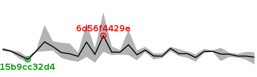

| Revision | Average | Min | Max | Size (bytes) | Benchmarked on | All times |
| bd64a1b794 | 36.80 | 36.02 | 37.33 | 79103 | Wed Aug 8 00:18:35 2012 | All times |
| f62fd06b79 | 36.92 | 36.55 | 37.37 | 79157 | Wed Aug 8 00:55:42 2012 | All times |
| 5fd2fc8e32 | 36.92 | 36.76 | 37.17 | 79103 | Tue Aug 7 23:03:45 2012 | All times |
| b6b26f5afd | 37.12 | 36.84 | 37.29 | 79157 | Tue Aug 7 23:41:26 2012 | All times |
| b52990befb | 37.13 | 36.40 | 37.79 | 79103 | Tue Aug 7 20:57:29 2012 | All times |
| 225b47efbd | 37.43 | 37.37 | 37.52 | 79157 | Tue Aug 7 21:34:49 2012 | All times |
| 3eea24e04a | 37.41 | 37.26 | 37.69 | 79103 | Tue Aug 7 22:12:08 2012 | All times |
| 876615e258 | 36.77 | 36.32 | 37.11 | 79157 | Tue Aug 7 09:57:25 2012 | All times |
| 43955e8062 | 37.18 | 36.75 | 37.42 | 79179 | Tue Aug 7 06:15:24 2012 | All times |
| d7b4d238af | 37.17 | 36.93 | 37.65 | 79233 | Tue Aug 7 03:59:56 2012 | All times |
| 71bb64df71 | 37.73 | 37.44 | 37.91 | 79179 | Tue Aug 7 04:37:26 2012 | All times |
| 9c9e2c6b1d | 36.91 | 36.71 | 37.21 | 78753 | Tue Aug 7 02:36:16 2012 | All times |
| fa7ff84d47 | 36.93 | 36.56 | 37.22 | 78248 | Tue Aug 7 00:41:50 2012 | All times |
| da9d9a6660 | 37.56 | 37.33 | 37.90 | 78302 | Mon Aug 6 18:04:39 2012 | All times |
| 050eba485a | 37.06 | 36.47 | 37.54 | 78302 | Mon Aug 6 07:22:16 2012 | All times |
| 5f8dd93b2a | 38.12 | 37.03 | 39.70 | 78189 | Mon Aug 6 08:00:29 2012 | All times |
| d77b4c9404 | 37.33 | 37.07 | 37.55 | 78189 | Mon Aug 6 02:25:02 2012 | All times |
| 67a79d5510 | 37.34 | 37.02 | 37.95 | 78189 | Mon Aug 6 03:01:33 2012 | All times |
| 6d56f4429e | 39.08 | 37.36 | 41.55 | 78243 | Mon Aug 6 18:41:36 2012 | All times |
| 4c48da17fe | 37.11 | 36.22 | 37.77 | 78243 | Mon Aug 6 01:47:38 2012 | All times |
| e3d59a330e | 38.40 | 36.84 | 40.40 | 78189 | Mon Aug 6 03:38:49 2012 | All times |
| c289daf4db | 36.89 | 36.32 | 37.29 | 78243 | Mon Aug 6 19:18:32 2012 | All times |
| a29fd0668e | 37.17 | 36.47 | 38.24 | 78189 | Mon Aug 6 04:53:09 2012 | All times |
| 07cd608e26 | 37.29 | 36.72 | 38.34 | 78189 | Mon Aug 6 04:15:35 2012 | All times |
| bfdb8242d9 | 37.92 | 37.51 | 38.49 | 78243 | Sat Aug 4 11:02:15 2012 | All times |
| 743d05c89c | 38.43 | 37.43 | 40.21 | 78243 | Sat Aug 4 09:28:32 2012 | All times |
| 7caeaa0b05 | 37.44 | 37.36 | 37.56 | 78243 | Sat Aug 4 02:08:31 2012 | All times |
| 15b9cc32d4 | 36.57 | 36.27 | 36.80 | 78189 | Sat Aug 4 10:05:44 2012 | All times |
| 7464bfd078 | 37.01 | 36.66 | 37.38 | 78189 | Fri Aug 3 01:57:03 2012 | All times |
| b38abd8131 | 37.44 | 37.34 | 37.55 | 78189 | Fri Aug 3 01:21:04 2012 | All times |
| b610464e80 | 37.65 | 37.48 | 37.78 | 78189 | Mon Aug 6 08:42:26 2012 | All times |
Written on Wed Aug 8 17:42:22 2012.